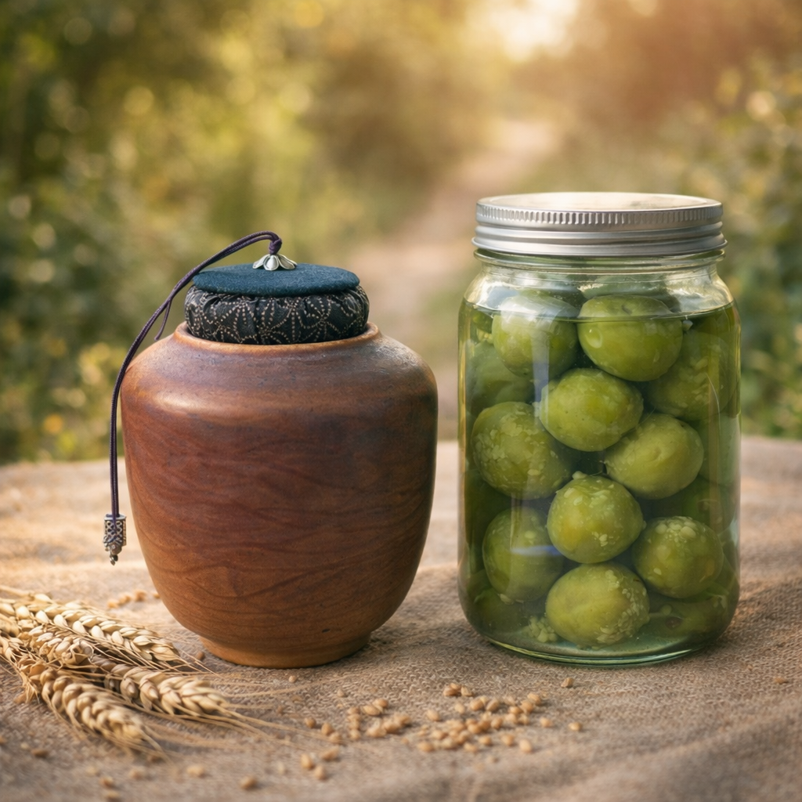
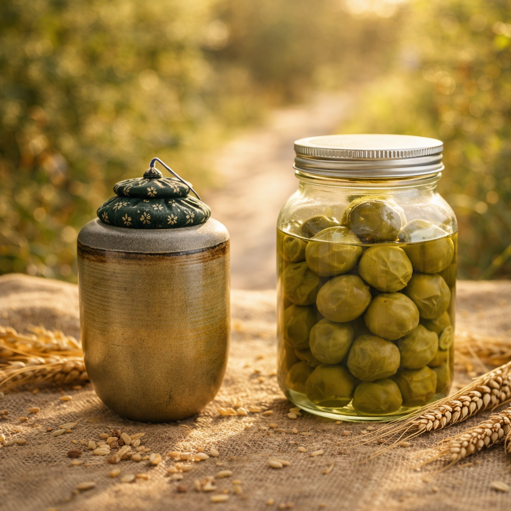
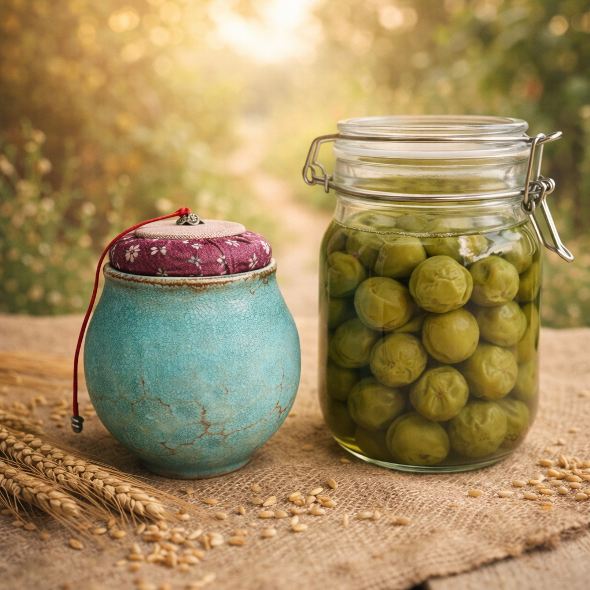
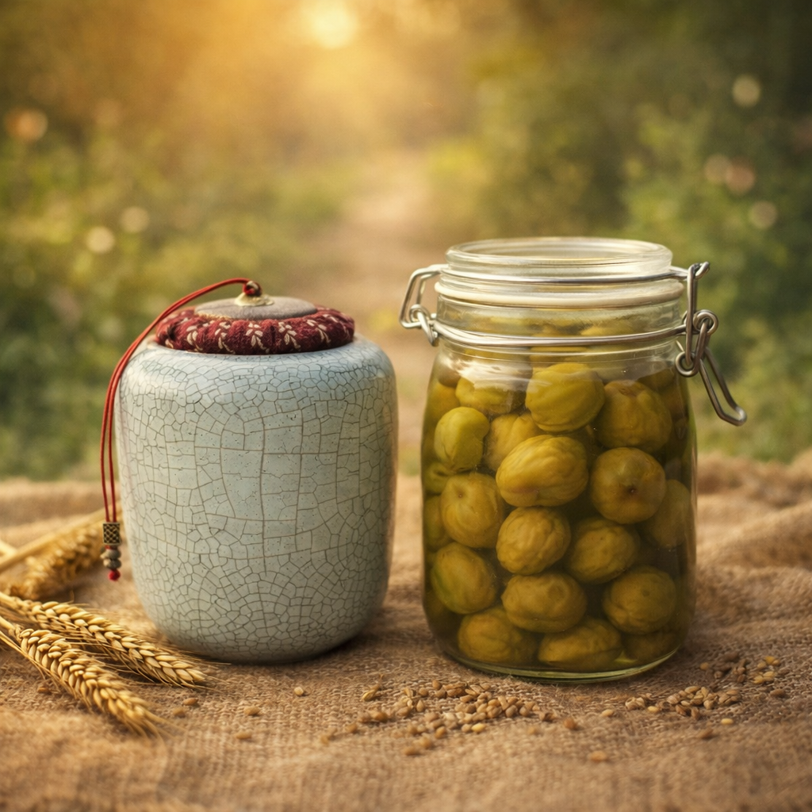

用一天的時間完成製作，
讓時間在之後慢慢發生。




填寫約 1 分鐘，非立即付款
很多 DIY 體驗在那一天就結束了，
但陶罐需要燒製，梅子需要時間轉變，
真正的完成，發生在你回到日常生活之後。
這不是一堂做完就走的課，
而是一段會持續發生的時間。
🕘 上午｜玻璃罐梅漬 DIY（09:00 – 12:00）
認識梅子的成熟狀態與比例，
完成一罐當天可帶回的梅子漬物，
含副餐：貝果佐鮪魚優格沙拉。
🕑 下午｜手拉胚陶罐 DIY（14:00 – 16:00）
從拉胚開始製作一只陶罐，
課後燒製，完成後附軟木塞蓋寄回。
本次春季體驗採自由選課制，
可依照自己的時間與步調，選擇想參與的內容。
可單堂報名，也可上午＋下午一起參加，
用自己的節奏，把春天帶回生活裡。
這是一個為親子設計的體驗版本，
放慢節奏，讓大人與孩子一起動手、一起完成。
799 元 / 組
成品為一罐梅子漬物，
由一位大人與一位孩子共同製作完成。
適合希望陪孩子一起動手，
在春天裡留下一段專屬你們的製作時光。
名額有限，額滿即止
日期：4 / 25（六）
本次春季體驗為同一天完成的製作流程，
上午與下午分別進行不同內容，
每一時段最多 10 位參加者，小班進行。
可依照個人需求，
選擇只參與上午或下午課程，
亦可於同一天完成兩段製作。
上課地點：
童窯工坊
彰化縣員林市浮圳路一段 205 號